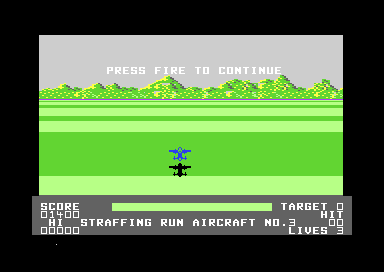
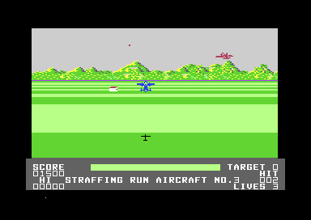

<meta charset="utf-8">
<meta name="viewport" content="width=device-width, initial-scale=1">
<title>{{title}}</title>
<link rel="preconnect" href="https://fonts.googleapis.com">
<link rel="stylesheet" href="https://fonts.googleapis.com/css2?family=Lato:wght@400;700;900&family=IBM+Plex+Mono:wght@400;500&display=swap">
<link rel="stylesheet" href="reference/hunter-page.css">
<!-- tabs -->
<header class="hero">
  <p class="eyebrow">{{platform}} · {{year}} · {{publisher}}</p>
  <h1>{{title}}</h1>
  <p class="sub">Shooting aircraft counts towards the ground's tally, a strafing run costs no life, and the flak can't touch the plane while it strafes.</p>
</header>
<main class="wrap">
<section id="defences">
  <p class="fig">01 · The ground defences</p>
  <h2 class="t">Four kinds of defence, one after another</h2>
  <p class="lede">The first half of a level is a count. The ground sends one kind of defence at a time, and the next kind comes when the plane has made enough hits on the first.</p>
  <p>The kinds come in a fixed order: tanks, then lorries, then guns, then buildings, the four rows on the <a href="graphics.html#cast">Graphics tab</a>. The kind is kept in <code>$41</code>, and <a href="source.html#1670"><code>spawn_ground</code></a> (<a href="source.html#1670"><code>$1670</code></a>) starts a new object of that kind in a free record when a random number from the sound chip's noise voice has its low seven bits clear, about one pass in 128. An object appears on the horizon and comes down the screen towards the plane, growing and speeding up through twelve templates, and slides sideways as the plane turns.</p>
  <p>The hits needed for a kind are kept in <code>$42</code>, and <a href="source.html#0f60"><code>set_hits_needed</code></a> (<a href="source.html#0f60"><code>$0F60</code></a>) sets them by the level: 5 on the first, 10 on the second, and 20 on the third and the fourth. A hit on a ground object scores 100 points, and a hit on an enemy aircraft scores 50; both count towards the kind on the ground (<a href="source.html#22d0"><code>hits_play</code></a>, <a href="source.html#22d0"><code>$22D0</code></a>). When the count reaches zero, <a href="source.html#29e0"><code>draw_distance_bar</code></a> (<a href="source.html#29e0"><code>$29E0</code></a>) moves on to the next kind. The bar along the bottom of the screen shows the progress: each kind has a section of it, filled as the hits are made.</p>
</section>

<section id="air">
  <p class="fig">02 · The air</p>
  <h2 class="t">Enemy aircraft, flak, and three ways to crash</h2>
  <p class="lede">The sky has its own enemies, and only some of them can be shot.</p>
  <p>Enemy aircraft appear near the plane and fly away from it, shrinking as they go, weaving left and right and now and then changing between climbing and diving (<a href="source.html#1a10"><code>spawn_aircraft</code></a>, <a href="source.html#1a10"><code>$1A10</code></a>; <a href="source.html#1ad9"><code>move_aircraft</code></a>, <a href="source.html#1ad9"><code>$1AD9</code></a>). There are four aircraft records, as there are four ground records, because each band of the screen has four sprites for enemies (<a href="graphics.html#bands">how the bands work</a>).</p>
  <p>The flak is a single record (<a href="source.html#8880"><code>$8880</code></a>). <a href="source.html#2680"><code>spawn_flak</code></a> (<a href="source.html#2680"><code>$2680</code></a>) starts it from the horizon at a random place, climbing towards the plane, with a random burst time. When the time comes the dot bursts in three steps (<a href="source.html#2700"><code>move_flak</code></a>, <a href="source.html#2700"><code>$2700</code></a>). The shot cannot hit the flak.</p>
  <p>The plane crashes in three ways: touching <a href="graphics.html#cast">the flak</a>, touching <a href="graphics.html#cast">a near enemy aircraft</a> (<a href="source.html#0f00"><code>hits_sky_crash</code></a>, <a href="source.html#0f00"><code>$0F00</code></a>), or flying low enough that <a href="graphics.html#cast">its shadow</a> touches a ground object. A crash sets <code>$3F</code> to 1, and <a href="source.html#2400"><code>plane_crash</code></a> (<a href="source.html#2400"><code>$2400</code></a>) counts it up every other pass through <a href="graphics.html#cast">ten explosion pictures</a>, from a fireball to a ring that breaks up; at <code>$A0</code> a life goes, the ground is cleared and play starts again. The game begins with four lives.</p>
</section>

<section id="target">
  <p class="fig">03 · The target</p>
  <h2 class="t">A strafing run for every plane in reserve, and one more</h2>
  <p class="lede">After the fourth kind, the level ends at its target, a different one on each level and three sprites wide.</p>
  <figure class="overview-shot"><figcaption>Before each run the plane waits, and the status line names the aircraft: "STRAFFING RUN AIRCRAFT NO.3", with the game's own spelling. Fire, released and pressed again, starts the run.</figcaption></figure>
  <p><a href="source.html#2a4c"><code>strafing_runs</code></a> (<a href="source.html#2a4c"><code>$2A4C</code></a>) copies the lives into <code>$43</code> and gives one run for each number from there down to 0, so four lives in reserve buy five runs. A run costs no life: only a crash does, and a crash ends the run. The flak cannot cause one here: the run's collision test looks for sprite 7 where the flak is sprite 2 (<a href="discoveries.html#flak-runs">Discoveries</a>), so only the target, met low, brings the plane down. <a href="source.html#2b00"><code>start_run</code></a> (<a href="source.html#2b00"><code>$2B00</code></a>) clears the sky and the ground, copies the level's target into the sprite shapes, and sends the three parts down the screen like a ground object. Each hit on any part counts one in <code>$45</code> and scores 100 points (<a href="source.html#2cd0"><code>hits_strafing</code></a>, <a href="source.html#2cd0"><code>$2CD0</code></a>), and the count shows as HIT on the status line.</p>
  <figure class="overview-shot"><figcaption>The first level's target, a long white building, during a run.</figcaption></figure>
  <div class="plate"><div style="overflow-x:auto"><canvas id="hp-targets" style="display:block;max-width:100%;height:auto;image-rendering:pixelated;border-radius:4px"></canvas></div><p class="cap">The four levels' targets at their nearest size, three sprites side by side, drawn from the game's bytes (<a href="source.html#3000"><code>$3000</code></a>, <a href="source.html#3800"><code>$3800</code></a>, <a href="source.html#9800"><code>$9800</code></a>, <a href="source.html#9000"><code>$9000</code></a>). The <a href="levels.html">Levels tab</a> compares the levels.</p></div>
  <p>When the runs are over, <a href="source.html#2e30"><code>run_result</code></a> (<a href="source.html#2e30"><code>$2E30</code></a>) picks a message by the hits:</p>
  <div class="plate"><table class="t">
    <tr><th>Hits</th><th>Message</th><th>Result</th></tr>
    <tr><td>64 or more</td><td>"WELL DONE - TARGET DESTROYED"</td><td>an extra life and the next level</td></tr>
    <tr><td>48 to 63</td><td>"TARGET SUSTAINED HEAVY DAMAGE"</td><td>an extra life and the next level</td></tr>
    <tr><td>16 to 47</td><td>"TARGET PARTIALLY DAMAGED"</td><td>an extra life and the next level</td></tr>
    <tr><td>under 16</td><td>"TARTARGET UNDAMAGED-TRY AGAIN"</td><td>the same level again</td></tr>
  </table><p class="cap">The thresholds are <code>$40</code>, <code>$30</code> and <code>$10</code> in the code (<a href="source.html#2e41"><code>$2E41</code></a>), and the messages are chosen through the pointers at <a href="source.html#8b90"><code>$8B90</code></a>. The extra life stops at 9 lives. "TARTARGET" is the game's own slip (<a href="discoveries.html#typos">Discoveries</a>).</p></div>
</section>

<section id="levels">
  <p class="fig">04 · The levels</p>
  <h2 class="t">Four levels, then round again</h2>
  <p>Each level asks for more hits on each kind of defence (5, 10, 20, and 20) and ends at a different target; after the fourth, play goes back to the first. The <a href="levels.html">Levels tab</a> sets the four side by side.</p>
</section>
</main>
<footer style="margin:16px 0 0;padding:22px var(--gx) 0;border-top:1px solid #e0ded8;font-family:'IBM Plex Mono',ui-monospace,Menlo,monospace;font-size:12px;color:#80838a"><a href="https://github.com/gamesexplained/gamesexplained" style="color:#1f5fa8;text-decoration:none">GitHub</a> · <a href="https://discord.gg/3V9GWyRDWV" style="color:#1f5fa8;text-decoration:none">Discord</a><br>© Games Explained contributors. Write-ups, facts and symbol maps are available under <a href="https://creativecommons.org/licenses/by-sa/4.0/" style="color:#1f5fa8;text-decoration:none">CC BY-SA 4.0</a>; code under <a href="https://opensource.org/licenses/MIT" style="color:#1f5fa8;text-decoration:none">MIT</a></footer>

<script src="../../lib/c64.js"></script>
<script>
(function () {
  const cv = document.getElementById('hp-targets');
  if (typeof C64 === 'undefined') return;
  C64.load('listing.json').then(M => {
    const ram = M.ram, P = C64.PAL, g = r => ram[0x8090 + r - 0xD000] & 15, S = 2, W = 3 * 24 * S + 16;
    const ctx = C64.canvas(cv, 4 * W + 8, 21 * S + 26);
    cv.style.width = Math.min(4 * W + 8, 900) + 'px';
    ctx.fillStyle = P[g(0xD021)]; ctx.fillRect(0, 0, cv.width, cv.height);
    [0x3000, 0x3800, 0x9800, 0x9000].forEach((base, i) => {
      ctx.fillStyle = P[0]; ctx.font = '11px "IBM Plex Mono", monospace'; ctx.fillText('Level ' + (i + 1), 8 + i * W, 12);
      for (let n = 0; n < 3; n++) C64.drawSpriteMC(ctx, ram.subarray(base + (27 + n) * 64, base + (27 + n) * 64 + 63), 8 + i * W + n * 24 * S, 18, S, P[1], P[g(0xD025)], P[g(0xD026)]);
    });
  });
})();
</script>
